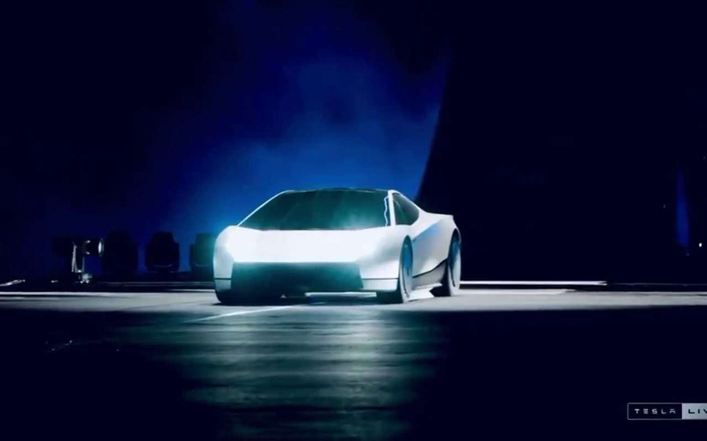

O Roadster decolou, e a timeline inteira parou para ver
Em McGregor, no Texas, a Tesla mostrou a segunda geração do Roadster fazendo 0 a 60 mph em 0,81 segundo, andando de ponta-cabeça e voando sobre uma fileira de carros.
Tesla · Elon Musk · Mario Nawfal · Teslaconomics · +5

Frame do vídeo de Mario Nawfal sobre o 0–60 em 0,81 s.
O carro que Musk prometeu em novembro de 2017 finalmente apareceu, quase nove anos depois e sem data de entrega curta: a produção ficou para 2028. O que veio na noite de quinta (15 out) foi uma demonstração de física aplicada, com cold gas thrusters da SpaceX, ar comprimido recarregável e ventoinhas que colam o carro ao chão.
Os seus bookmarks capturaram cada ato: o half pipe, o voo, o cronômetro e a frase de Musk sobre carros voadores. Esta edição junta tudo, com uma timeline do que foi prometido e do que foi entregue.
notaOs números de desempenho são os divulgados pela Tesla no evento. Preço e especificações das variantes Thrust e Rocket não foram detalhados.
01
Timeline
2017 → 15 out 2026 · horários em BRT
Musk apresenta o Roadster de segunda geração
Em um evento de novembro de 2017 a Tesla mostrou o conceito e passou a aceitar depósitos de US$ 50 mil. A entrega estava prevista para 2020, segundo a Dezeen, e todas as metas seguintes foram perdidas, lembra a CNBC.
O pacote SpaceX entra na conversa
Musk escreveu que o pacote opcional da SpaceX teria cerca de 10 pequenos foguetes distribuídos pelo carro para melhorar aceleração, velocidade final, frenagem e curvas, e brincou que talvez permitissem a um Tesla voar.
Respondendo a MKBHD, Musk detalhou a ideia: um sistema de cold gas thrusters da SpaceX, com ar em altíssima pressão em um composite over-wrapped pressure vessel ocupando o espaço dos dois bancos de trás.
A CNBC registra que, até outubro de 2025, Musk ainda vendia uma demonstração do Roadster para antes do fim daquele ano. Ela não rolou, e o carro seguiu sem data de entrega.
A Tesla põe o Roadster no ar
A conta @Tesla publica a transmissão do evento, realizado em McGregor, no Texas, nas instalações de testes da SpaceX. O post passa de 2,3 milhões de impressões.
Teslaconomics registra o Roadster subindo uma rampa em half pipe, ficando de ponta-cabeça e pousando. O vídeo vertical passa de 2 milhões de impressões.
Teslaconomics resume o anúncio: o Roadster foi extremamente difícil de construir e entra oficialmente em produção em 2028, mesma data citada por CNBC, Wired e Dezeen.
Mario Nawfal destaca o tempo de 0,81 segundo no 0–60 mph. A Dezeen trata o número como alegação da Tesla, e a CNBC confirma que Lars Moravy fez a demonstração diante do público.
O DogeDesigner publica o trecho em que Musk diz que o carro cola tanto no chão que parece quebrar a física, e que vai superar todos os recordes de pista já registrados.
Teslaconomics (@Teslaconomics) postou o momento em que o Roadster percorre a curva da rampa em half pipe, invertido, e volta ao chão sem perder o controle. Com mais de 2 milhões de impressões, foi o vídeo vertical mais visto da noite.
Dezeen e Wired explicam o truque: o sistema de ventoinhas e vedação sob o assoalho gera downforce suficiente para sustentar o carro de cabeça para baixo, inclusive parado, segundo a página do Roadster no site da Tesla.
Elon Musk (@elonmusk) respondeu com o clipe do salto do Roadster sobre a fileira de veículos da Tesla, e o post passou de 5,8 milhões de impressões. Nos frames dá para ver o carro no ar, com fumaça dos cold gas thrusters.
Segundo a Wired, o carro flutuou alguns pés (poucos metros) acima do caminhão elétrico Semi da Tesla. Quem pilota a versão aérea, a Rocket, senta sozinho: ela tem um único assento.
A conta @Tesla compartilhou o vídeo com mais de 6 milhões de impressões, o maior alcance entre os bookmarks desta edição. O clipe mostra a preparação do Roadster diante do half pipe e os momentos de fumaça na subida.
A cena é a mesma que a Dezeen descreve: o carro sobe a rampa, decola pela borda e permanece no ar por alguns segundos antes de pousar.
Mario Nawfal (@MarioNawfal) resumiu a demonstração: o Roadster voou sobre uma fileira de Teslas e inverteu no ar, com um sistema de ventoinhas que, segundo o post, puxa até 2G. A conta ainda cita tecnologia da SpaceX embarcada.
O post tem quase 400 mil impressões e credita o vídeo à própria Tesla. Nos frames aparece o palco do evento, com o letreiro ROADSTER ao fundo.
Mario Nawfal (@MarioNawfal) celebrou o tempo de 0,81 s como o mais rápido que qualquer carro já fez, nas palavras do post. O número vem da Tesla, e a Dezeen o descreve como alegação da empresa para o “quickest production vehicle” a 60 mph.
Na conta da STASH: 60 mph são cerca de 26,8 m/s, o que dá uma aceleração média de aproximadamente 3,4 g nesse intervalo.
O DogeDesigner (@cb_doge) cortou o trecho em que Musk, entre risadas, descreve o carro como algo que “aspira” o chão. A explicação séria vem logo depois: com tanto downforce, parece que o carro quebra a física.
A afirmação é uma promessa, não um resultado medido. Até aqui, o que a Tesla mostrou foram demonstrações, não tempos de volta.
A conta @Optimus_RH brincou com “minhas habilidades de direção” e postou um clipe que combina a câmera interna, com os dois bancos moldados no chassi, e um HUD de telemetria na base da tela. O vídeo passa de 150 mil impressões.
É o formato mais próximo de um acelerômetro que apareceu nos bookmarks: dados de carro em tempo real sobre a imagem externa.
Sawyer Merritt (@SawyerMerritt) publicou, com exclusividade, o vídeo de desenvolvimento do Roadster exibido no evento. Os frames incluem jatos de gás frio medidos contra uma régua, estruturas de teste e uma vista aérea do carro sobre a rampa.
Com mais de 340 mil impressões, é a melhor janela para entender como a Tesla e a SpaceX validaram o sistema antes de subir no palco.
A Tesla (@Tesla) explicou que o Roadster se inspira no SR-71 e no F-35, depois de passar por Cybertruck, Cybercab e Optimus. Franz von Holzhausen fala em “aerospace aesthetic”, com portas tipo scissor e spoiler retrátil, segundo a Dezeen.
Brian Roemmele (@BrianRoemmele) escreveu que ficou “blown away” com o vídeo oficial. Os frames trazem closes do assoalho e do que parecem ser os bocais dos thrusters, em cinza e vermelho.
Teslaconomics (@Teslaconomics) destacou que o carro foi “unbelievably hard to build” e entra em produção em 2028. A CNBC lembra que nenhum preço foi divulgado, e a Tesla só aceita reserva da versão Performance.
bloom (@bloomjpg) postou uma reação em live ao Roadster decolando: o streamer, estupefato, grita o que pensa. O clipe passa de 600 mil impressões e mostra o carro na base da rampa ao lado da câmera.
Em 9 de junho de 2018, Musk escreveu que o SpaceX option package traria cerca de 10 pequenos thrusters ao redor do carro, e que talvez um Tesla pudesse voar. Oito anos depois, o carro voou.
Em janeiro de 2019, Musk respondeu a MKBHD que o sistema usaria cold gas thrusters da SpaceX alimentados por um vaso composite over-wrapped. Segundo a Dezeen, a Tesla informa que os tanques do carro de hoje podem ser recomprimidos sem combustível.